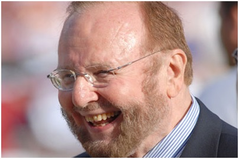
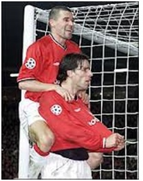

Chương 36

uộc đời lắm chuyện trớ trêu. GĐĐH David Gill của Manchester United đã khuyến khích Malcolm Glazer mua cổ phần CLB để làm đối trọng với Magnier và McManus, tránh việc bộ đội Ireland thâu tóm Quỷ Đỏ vào tay, không ngờ người có tham vọng thâu tóm lại chính là tài phiệt người Mỹ. Từ 19% cổ phần, Glazer cứ mua thêm, mua thêm mãi. Magnier và McManus trở thành rào cản cuối cùng ngăn chặn ông ta sở hữu hoàn toàn đội bóng.
Rào cản ấy chắc chắn không đứng vững được lâu, bởi Magnier và McManus chẳng yêu quý gì United, mà chỉ là những doanh nhân, thuận mua vừa bán; nếu Glazer đưa ra cái giá thích hợp, đem lại cho họ lợi nhuận cao, họ sẽ sẵn sàng bán ngay cổ phần. Người hâm mộ Manchester thừa hiểu chẳng thể trông chờ gì ở hai tay Ireland, nên đứng ra tự tổ chức phong trào “anti Glazer” rầm rộ, y như chiến dịch “anti Murdoch” năm nào.
Vì sao phản đối Glazer? Thứ nhất, người ta không muốn thấy một CLB có truyền thống lâu đời như Manchester United lọt vào tay tài phiệt nước ngoài. Thứ hai, Glazer không phải Abramovich. Abramovich là siêu tỷ phú thuộc hàng top trên thế giới, Glazer thậm chí chưa có nổi một tỷ[1]. Hơn nữa, Abramovich đam mê bóng đá thật sự, còn Glazer chỉ khoái trò bóng bầu dục đầy bạo lực của Mỹ. Abramovich sẵn sàng chịu lỗ, liên tục bơm tiền cho CLB để giành danh hiệu, Glazer chỉ dùng CLB như một công cụ làm ăn kiếm chác. Với Glazer, đừng hòng có chuyện chi ra 100 triệu mỗi năm cho việc mua cầu thủ. Ngược lại, vì Glazer chỉ bỏ rất ít tiền túi để mua United, số còn lại đi vay, nên khi đã trở thành chủ nhân tại Old Trafford, ông ta dự tính dùng lợi nhuận của đội bóng để trả nợ lãi suất. Như vậy, nếu ông ta thành công, United plc đang là một công ty có tình hình tài chính vô cùng lành mạnh, tự dưng sẽ biến ra nợ đầm nợ đìa! Tóm lại, có thể nói một câu thế này: Trong khi Abramovich bơm máu cho đội bóng của mình, Glazer đóng vai trò hút máu.
Tuy nhiên, chống Glazer không dễ như chống Murdoch. Khi xưa, BskyB của Murdoch là đơn vị nắm quyền phát sóng giải Ngoại Hạng, có thể đem chuyện mâu thuẫn lợi ích ra kiện. Nay, Glazer là người Mỹ, chỉ đang sở hữu một đội bóng bầu dục Mỹ, vốn chẳng liên quan gì với bóng đá Anh; ông ta muốn mua bất kỳ CLB Anh nào cũng được, không có chi bất hợp pháp, chẳng ủy ban hay bộ ngành nào có thể can thiệp. CĐV biểu tình ngoài đường phố, đốt hình nộm Glazer, đốt cờ Mỹ, dẫu có gây tiếng vang, nhưng không tác động gì đến kết quả chung cuộc.
Thiết thực hơn, Keith Harris, một CĐV, đồng thời cũng là nhà hoạt động ngân hàng có máu mặt, được sự chống lưng của tập đoàn tài chính Nomura, đứng ra cạnh tranh với Glazer để mua lại United, nhưng lên kế hoạch mua xong sẽ trao lại cho các fan. Trong quá trình đấu đá cùng Glazer, Harris phát hiện ra các quỹ đầu tư chỉ cho nhà tài phiệt Mỹ vay tiền với điều kiện ông ta phải giữ được Alex Ferguson trên ghế HLV[2]. Thế nên, chỉ cần Ferguson ra đi, tham vọng của Glazer sẽ tan vỡ ngay từ trong trứng nước.
Với thông tin trên, Harris đến gặp Andy Walsh, hội trưởng IMUSA, một trong những hội CĐV Manchester United lớn nhất, nhờ Walsh thuyết phục Ferguson từ chức và lên tiếng ủng hộ Nomura. Việc từ chức chỉ là tạm thời, Harris hứa, sau khi Glazer thất bại và Nomura thành công, Fergie sẽ lập tức được mời trở lại. “Tôi nói cùng Alex: Rất tiếc khi phải đặt ông vào tình thế này, song ông là niềm hy vọng cuối cùng của chúng tôi”, Walsh tường thuật, “Tôi giảng giải, phân tích rõ vai trò ông ấy có thể đóng trong việc cứu CLB thoát cảnh nợ nần. Fergie im lặng lắng nghe, nghe xong thì bảo ông ấy đã hiểu. Ông ấy nói mình cần bàn bạc thêm với các con, rồi sẽ liên lạc với tôi sau. Nhưng rồi ổng chẳng bao giờ liên lạc cả”.
Ferguson không can dự, vì cũng như những lần trước, ông cố gắng giữ thế trung lập: Tôi là HLV, tôi chỉ huấn luyện, ai là chủ CLB thì cũng vậy. Hơn thế, việc từ chức tiềm ẩn rất nhiều rủi ro, sai một ly có thể đi vạn dặm. Ai chắc chắn được sau khi ông từ chức, mọi việc sẽ diễn tiến đúng như lời Harris và Walsh? Nếu mọi việc không như dự định, Fergie mất ghế luôn đã đành, mà hàng chục người dưới quyền ông cũng bơ vơ, bởi người kế vị nhất định sẽ đem đến một bộ sậu mới, thay thế đội ngũ hiện tại.
Thấy Ferguson không ủng hộ, Nomura rút lui, không chống lưng cho Harris nữa. Đến tháng 5, 2005, Magnier và McManus bán hết cổ phần cho Glazer, thu lời hơn 30 triệu bảng. Ngày 16 tháng 5, với cổ phần lên đến 75%, Glazer hủy niêm yết cổ phiếu United trên sàn chứng khoán. Từ một công ty đại chúng, CLB giờ đây trở nên sở hữu riêng của Glazer. Những cổ đông nhỏ còn lại không còn cách nào khác, buộc phải bán luôn phần mình cho tân chủ nhân người Mỹ, vì nếu không, số cổ phiếu trong tay họ cũng biến thành giấy lộn, chẳng còn giá trị gì. Ngày 8 tháng 6, Glazer bổ nhiệm hai con trai, Joel và Avram, vào vị trí đồng chủ tịch United.
Giá trị United vào khoảng 800 triệu bảng, nhưng trong phi vụ thôn tính, Glazer chỉ bỏ ra 200 triệu, số còn lại đi vay. Ước tính cho thấy: Để Glazer đủ tiền trả nợ, mỗi năm, CLB cần kiếm lời 60 triệu bảng. Tất nhiên, United là một cỗ máy sinh lợi khổng lồ: Chỉ mỗi trận đấu sân nhà có thể thu về đến ba triệu bảng tiền vé, cộng thêm ¼ triệu tiền bán đồ lưu niệm, chưa kể bản quyền truyền hình. Song như thế vẫn chưa đủ, nên ngay khi tới Old Trafford, nhà Glazer tìm mọi cách để tăng thu: Kiếm thêm các hợp đồng tài trợ mới, tăng số vé đặc biệt giành cho giới nhà giàu, và nâng giá vé phổ thông. Do việc nâng giá vé gây phẫn nộ, mỗi khi các quý tử nhà Glazer đến CLB, họ phải đi sớm về trễ, chuồn theo lối cửa hậu để trốn người hâm mộ. Đi đâu ở Manchester, họ cũng phải thuê hàng đống vệ sỹ và cảnh sát theo bảo vệ, sợ bị “khủng bố”.
Dẫu đa phần người hâm mộ chống đối Glazer, một khi đứng trước sự việc đã rồi, họ cũng đành chấp nhận. Riêng một số fan cực đoan quyết định ly khai, thành lập một CLB mới mang tên FC United of Manchester, và từ đó trở đi ủng hộ đội bóng này, thay vì Manchester United. Với Andy Walsh giữ chức chủ tịch, FC United tranh tài ở giải hạng chót trong hệ thống các giải VĐQG nước Anh. CLB hoàn toàn do các CĐV làm chủ, đặt ra tiêu chí thi đấu vì niềm vui và khán giả, không vì lợi nhuận, bạc tiền…

Tài phiệt Mỹ Malcolm Glazer (Ảnh: Forbes.com)
Sự xuất hiện của cha con Glazer trước mắt chưa gây ảnh hưởng đến phong độ của United. Phần vì chẳng biết gì về bóng đá, phần muốn lấy lòng Sir Alex, hòng nhờ Sir nói tốt giúp với các fan, cha con họ để HLV trưởng toàn quyền về mặt chuyên môn, không can thiệp điều chi. Vả lại, Quỷ Đỏ vốn đang đi đúng hướng, dù có hay không Glazer, tương lai xán lạn vẫn mở sẵn chờ đội. Ferguson đã gầy dựng gần xong thế hệ mới, chỉ cần bổ sung thêm vài vị trí. Đầu mùa 2005-2006, ông mất Phil Neville cho Everton, bù lại mua được đối tượng đã theo đuổi từ lâu: Edwin Van der Sar.
Từ ngày Peter Schmeichel rời Old Trafford, Ferguson đã thử nghiệm cả thảy 10 người đóng thế: Van der Gouw, Mark Bosnich, Nick Culkin, Massimo Taibi, Paul Rachubka, Andy Goram, Fabien Barthez, Roy Carroll, Ricardo, và Tim Howard. Cả 10 đều thất bại. Phải đến Van der Sar, lời nguyền thủ môn mới được hóa giải. Van der Sar không phân phối bóng, chỉ huy hàng phòng ngự tốt như Schmeichel, cũng không “hầm hố” bằng, nhưng về các kỹ năng khác, anh không hề kém cạnh. Nếu Schmeichel được chấm điểm 10, thủ thành người Hà Lan được ít ra 8.5, mà được 8.5/10 của Schmeichel đã quá đủ là “thiên hạ đệ nhất”. Tuổi 35 của Van der Sar cũng không phải nhân tố gây trở ngại, vì thủ môn thi đấu tốt đến ngoài 40 là thường.Ta không khỏi tự hỏi liệu lịch sử sẽ đổi khác ra sao, nếu Van der Sar đến Old Trafford ngay sau lúc Schmeichel nói lời từ giã, thay vì Mark Bosnich?
Đến cùng Van der Sar có tiền vệ người Hàn Quốc Park Ji Sung. Đây là vụ chuyển nhượng mang nhiều tính thương mại: Lực lượng CĐV của Manchester United tại Á Châu vốn rất đông đảo, ký hợp đồng với một cầu thủ da vàng là cách tốt nhất để củng cố quan hệ với họ. Tuy không thật sự nổi trội, Park luôn thi đấu năng nổ, cần cù, để lại ấn tượng tốt trong những năm ở Old Trafford. Đến kỳ chuyển nhượng mùa đông, tháng 1, 2006, United lại sắm thêm hai nhân vật quan trọng: trung vệ người Serbie, Nemanja Vidic (7 triệu bảng) và hậu vệ cánh trái người Pháp Patrice Evra (5.5 triệu).Thế hệ mới của Ferguson đến đây cơ bản hoàn chỉnh.
Giữa hai mùa chuyển nhượng, xảy ra sự cố Roy Keane.
Tại Old Trafford, Roy Keane chính là người giống Ferguson nhất về mặt tính cách: Đầy tham vọng, hừng hực quyết tâm, nóng nảy như lửa. “Keane là động lực và cảm hứng của United, một tiền vệ có khả năng đọc thế trận số một”, Fergie viết, “Khi nhìn Keane, tôi thấy trong cậu ta sự khát khao chiến thắng và khát vọng vươn đến hoàn hảo của chính tôi”.Bản tính vốn bất trị, trước giờ Keane chỉ nể phục hai người: Brian Clough, ông thầy cũ ở Nottingham Forest, và Alex Ferguson. Ở ĐTQG Ireland, các đời HLV đều bị anh coi khinh như mẻ. Hồi World Cup 2002, Keane mắng vào mặt HLV McCarthy sa sả suốt tám phút liền, chửi ông là “thằng l…”, rồi “đồ HLV rác rưởi”. Mắng đã đời, Keane quay đi, không quên thòng thêm một câu: “Cầm cái World Cup mà đút vào đít. Mẹ! Ông đây chỉ nghe lời một mình ngài Alex thôi!”
Trên sân bóng, tuy Keane làm tốt vai trò thủ lĩnh, truyền cảm hứng cho mọi người; ngoài đời, anh luôn sống lạnh lùng, ít thân cùng ai. Như thế cũng không sao, nhưng càng lớn tuổi, anh lại càng khó tính, cộc cằn, gây sự với tất cả mọi người, đến cả lời Sir Alex cũng không thèm nghe. Những năm cuối ở United, Keane nhìn đâu cũng thấy bất mãn. Tính cách giản dị, anh khó chịu khi thấy đồng đội hầu hết đều thích sống xa hoa, ham xài hàng hiệu, ngay cả bọn cầu thủ trẻ chưa có thành tích gì cũng đua đòi xế hộp mới cáu. "Hào quang và danh vọng làm chúng ta đánh mất chính mình", Keane ngao ngán, "Cả lũ bây giờ chỉ thích đồng hồ Rolex, sắm xe hơi cho đầy ga-ra, rồi mua biệt thự, ĐM nó, còn đâu niềm đam mê, khát vọng vì trái bóng nữa". Nhìn lên trên, thấy Fergie trở nên hiền hơn trước, "dung túng" cho lũ trẻ làm xằng, anh lại càng chán. Rồi lại còn cái lão trợ lý thâm hiểm Carlos Queiroz, lúc nào cũng ở bên tai HLV trưởng, rỉ tai mê hoặc cấp trên!
-Thầy thay đổi rồi - Keane nói, sau một lần tranh luận cùng Ferguson.
-Roy à - Ferguson đáp - Thầy thay đổi vì hôm nay không còn là hôm qua. Thế giới bây giờ khác rồi. Cầu thủ đội mình bây giờ đến từ 20 nước khác nhau. Em bảo thầy thay đổi là đúng. Nếu không biết thay đổi làm sao tồn tại được?
-Thầy không còn là thầy ngày xưa - Keane như không nghe thấy gì, chỉ đơn giản lặp lại ý trước.
Giọt nước làm tràn ly rơi xuống vào tháng 10, 2005.Sau trận United thua Middlesbrough 1-4, khi trả lời phỏng vấn MUTV, Roy Keane kịch liệt chỉ trích các đồng đội, từ Rio Ferdinandđến Kieran Richardson, từ Alan Smith đến John O’Shea, cả Van der Sar cũng không chừa. MUTV là kênh “tuyên truyền” của Manchester United, dĩ nhiên họ không thể phát những lời tiêu cực trên, nên đành bỏ chương trình phỏng vấn hàng tuần, thay vào chương trình khác. Băng ghi hình buổi phỏng vấn được gửi tới cho David Gill và Alex Ferguson.
Thật ra, Sir Alex cũng thường xuyên mắng chửi học trò. Điều Keane nói chẳng tệ gì hơn những lời chửi của Sir trong phòng thay đồ. Song khác biệt chính nằm ở đó: Sir chỉ nói trong phòng thay đồ, trong khi Keane phát biểu trên truyền hình. Dù chương trình chưa kịp phát sóng, rõ ràng anh có ý định vạch chuyện xấu cho thiên hạ hay, phá vỡ đoàn kết nội bộ. Bị thầy phê phán, Keane đề nghị hãy tập hợp các cầu thủ và BHL, mở băng ghi hình cùng xem lại, rồi hỏi ý kiến từng người về những lời anh đã nói.
Ferguson làm theo lời Keane. Khi mọi người xem xong, Van der Sar lên tiếng, bảo Keane không nên chỉ trích đồng đội như thế. Keane tức mình, vặc lại liền: “Câm miệng đi, mày là ai? Đã đến đây được bao lâu? Có hiểu biết về đội bóng được như tao không?” Carlos Queiroz can thiệp, nhắc rằng giữa đồng đội với nhau, hay giữa cầu thủ và đội bóng, cần có lòng tương kính, trung thành, cũng bị Keane mắng như tát nước: “Ngày xưa đứa nào bỏ CLB này sang Real Madrid, sau một năm bị chúng nó đá đít, lại cúp đuôi chạy về? Có phải là ông không? Ông có tư cách để nói về lòng trung thành với tôi sao?” Đến khi chính Ferguson lên tiếng, Keane vẫn không hề kiêng nể. “Còn thầy nữa”, anh gay gắt, mắt long sòng sọc, “Không biết phân biệt công tư, cứ để cái mâu thuẫn riêng với thằng cha Magnier ảnh hưởng đến đội bóng.”
Thấy Keane trong trạng thái trên, Sir Alex cũng phải phát khiếp. Keane bỏ đi rồi, ông quay sang nói với Queiroz: “Hắn phải đi thôi, Carlos. Không còn cách nào khác, phải tống hắn khỏi đây.”
Nếu Sircòn chút nào do dự, sự kiện xảy ra sau đó khiến việc Keane ra đi trở thành không thể đảo ngược. Tuy Fergie ra lệnh, cấm không ai được cung cấp thông tin về vụ Roy Keane cho truyền thông, ở Old Trafford có đến 500 nhân viên, không sao kiểm soát nổi từng người. Một trong những nhân viên đó đã bán tin tức cho tờ Daily Mirror với giá 15000 bảng, để rồi ngày 2 tháng 11, 2005, độc giả đọc thấy trên báo này dòng chữ “độc quyền trên toàn thế giới”, bên dưới là nguyên văn bài trả lời phỏng vấn MUTV của Keane.
Việc đã tiết lộ ra ngoài, nếu không “trảm quyền thần” làm gương, Ferguson sẽ chẳng còn uy tín. Hai tuần sau ngày bài báo ra mắt độc giả, United tuyên bố chấm dứt hợp đồng với Roy Keane, trao băng đội trưởng về Gary Neville. Keane chuyển sang thi đấu cho Celtic, nhưng đội bóng cũ vẫn ghi nhận và trân trọng những đóng góp không thể quên của anh. Tháng 5, 2006, trận đấu tôn vinh Keane giữa Manchester United và Celtic được tổ chức tại Old Trafford. Keane chơi cho mỗi đội một hiệp.
Việc vắng Keane không làm United lao đao. Ngược lại là khác. Keane đã cao tuổi, phong độ giảm sút, ngày càng trái tính trái nết, không còn là thủ quân đáng ngưỡng mộ cho đàn em trông vào. Anh biến ra một thứ ông kẹ, khiến đồng đội sợ sệt, mất tinh thần. Không có Keane, bầu không khí Old Trafford nhẹ nhõm hơn, và sỹ khí tăng cao, thành tích được cải thiện. Mùa 2005-2006, Wayne Rooney năm thứ hai liên tiếp giành giải Cầu Thủ Trẻ Xuất Sắc Nhất Nước Anh. Quỷ Đỏ bị loại sớm tại Cúp C1[3], vẫn chưa vô địch Ngoại Hạng, song lên được ngôi á quân, chỉ sau Chelsea, không còn phải đứng hạng ba. Đội cũng không trắng tay, bởi đã có Cúp Liên Đoàn. Ferguson gây ngạc nhiên trong trận chung kết cúp này, khi để Louis Saha đá chính thay Van Nistelrooy. Không phụ lòng thầy, Saha ghi một bàn, và kiến tạo hai bàn cho Rooney và Ronaldo, giúp đội thắng đậm Wigan 4-0.
Cúp Liên Đoàn không phải danh hiệu quan trọng, tờ The Times còn “chua ngoa” ví nó với…cái bô dùng đi tè, vậy mà Van Nistelrooy lại vô cùng giận dữ vì không được đá chung kết. Anh làm náo loạn, chửi cả Sir Alex. Quan hệ thầy trò từ đó rạn nứt. Giận cá chém thớt, Nistelrooy ủng oẳng với Cristiano Ronaldo trên sân tập, đập cho đàn em người Bồ sưng mặt, rồi lêu lêu: “Về mà khóc với bố mày ấy”.“Bố” ở đây chỉ Carlos Queiroz, đồng hương BĐN, người rất thương yêu, luôn quan tâm, giúp đỡ Ronaldo. Vô tình lúc bấy giờ, bố ruột của Ronaldo vừa mới qua đời, thành thử câu nói của Nistelrooy trở thành lời xúc phạm nặng nề.
Tuy Nistelrooy là chân sút vĩ đại trong lịch sử United, Ronaldo mới là tương lai đội bóng. Giữa hai người, không ngạc nhiên khi Sir Alex đứng về phía Ronaldo. Vả lại, không chỉ Ronaldo mà thôi, Nistelrooy còn gây gổ với cả Gary Neville và David Bellion. Phát ngấy với Nistelrooy, sẵn dịp anh đang nằng nặc đòi sang Real Madrid, Fergusonbán luôn tiền đạo chủ lực với giá 10.5 triệu bảng.
Nhìn nhận một cách khách quan, dù Van Nistelrooy đạt được những thành tích lớn lao trong màu áo United, việc bán anh trước mùa 2006-2007 là một quyết định đúng đắn và sáng suốt của Ferguson. Lúc mới đến Old Trafford, Nistelrooy hoạt động khá rộng, thậm chí có lần ghi bàn sau pha lừa bóng từ giữa sân, nhưng càng lúc anh càng thu mình vào vòng cấm địa. Hai mùa đầu tiên, anh bùng nổ dữ dội, ghi 36, rồi 44 bàn, nhưng sau đó dần dần đi xuống, đến mùa cuối cùng chỉ có 24 lần lập công.
Với sơ đồ một tiền đạo cắm của United, mọi cơ hội đều đổ dồn về Van Nistelrooy. Vậy mà, thời gian sau này, tiền đạo Hà Lan kém duyên đến kinh ngạc, dường như phải có đến 7-8 cơ hội, anh mới phá lưới được một lần. Con số 24 bàn nhìn qua tưởng cao, khi so với số cơ hội mới thấy là quá ít. Hơn nữa, sơ đồ 4-5-1 Fergie sử dụng chỉ nhằm phục vụ Nistelrooy, không phát huy được hết khả năng những cầu thủ khác. Nistelrooy chỉ muốn người ta vì mình, không vì bất kỳ ai. Diego Forlan là tiền đạo giỏi, mà khi đá cho United không thể tỏa sáng, một phần cũng do Nistelrooy không chịu hợp tác, phối hợp cùng anh.
Không còn Nistelrooy, không còn 4-5-1, lúc ấy tiềm lực đội bóng mới được phát huy đến mức tối đa.

Roy Keane và Van Nistelrooy, hai trụ cột trở thành tác nhân gây rối, phải rời United trong mùa 2005-2006 (Ảnh: Thesun.co.uk)
Chú thích:
[1] Sau khi mua United, Glazer mới thành tỷ phú. Trước đó chỉ là triệu phú.
[2] Các quỹ đầu tư này đã tính toán hết cả: Ferguson là bảo chứng cho sự thành công của Manchester United. Không có Ferguson, không có gì bảo đảm United sẽ tiếp tục thành công trong tương lai; mà không thành công thì không lợi nhuận; không lợi nhuận thì Glazer không có tiền trả lãi cho họ. Ngoài Ferguson, họ còn buộc Glazer phải cam kết giữ David Gill ở vị trí GĐĐH.
[3] Lần đầu tiên sau nhiều năm, đội bị loại ngay từ vòng bảng, dù đối thủ chỉ là Villareal, Benfica và Lille.